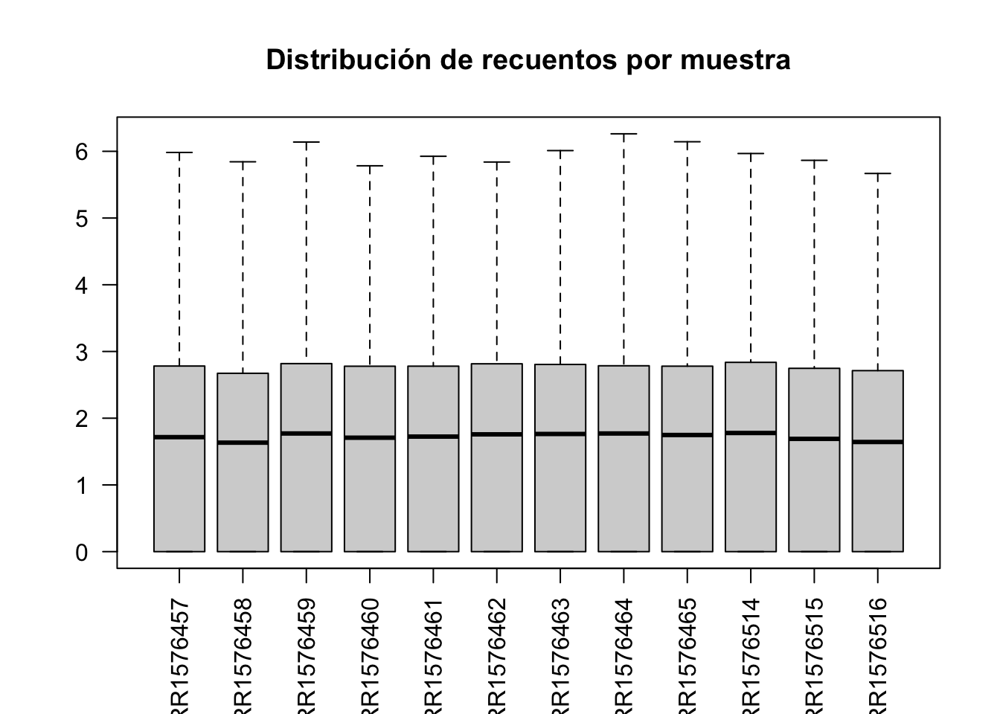
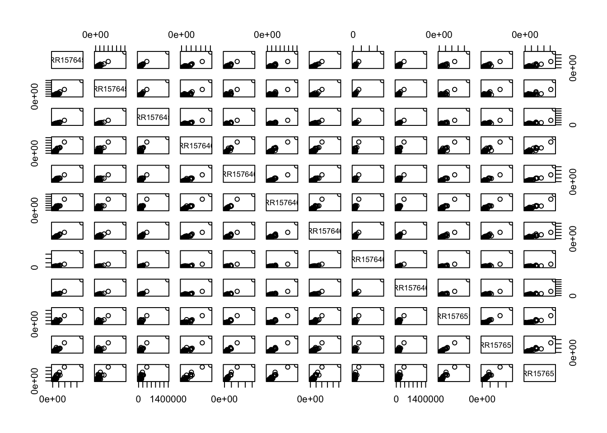
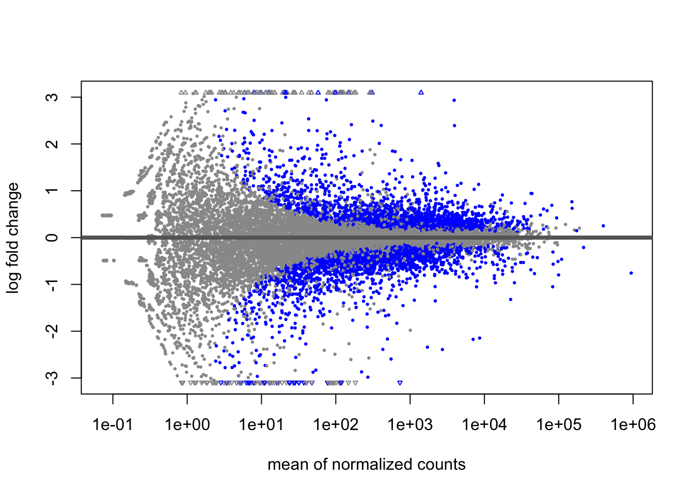
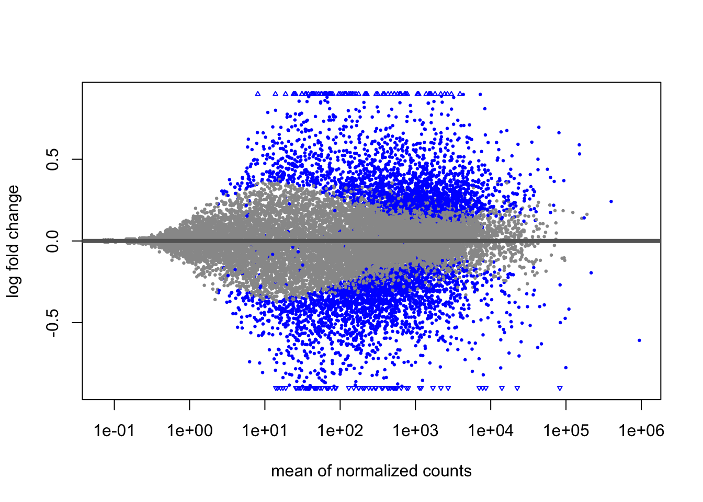
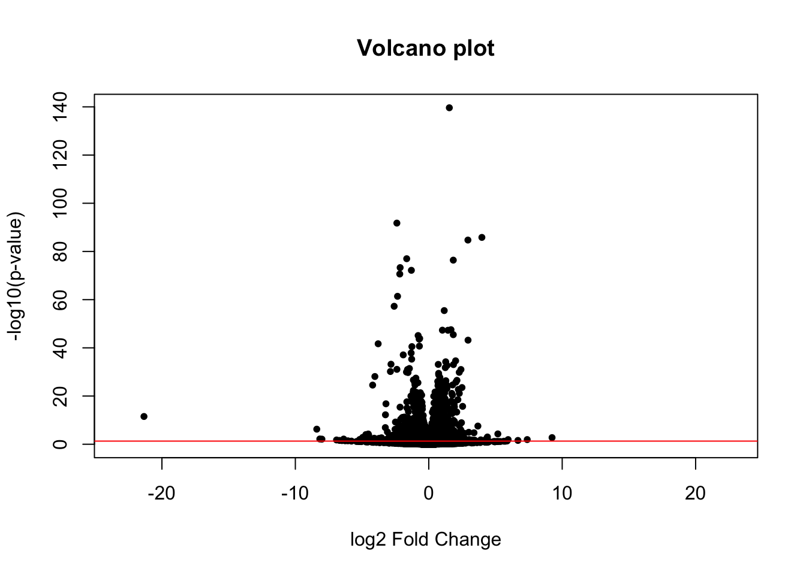
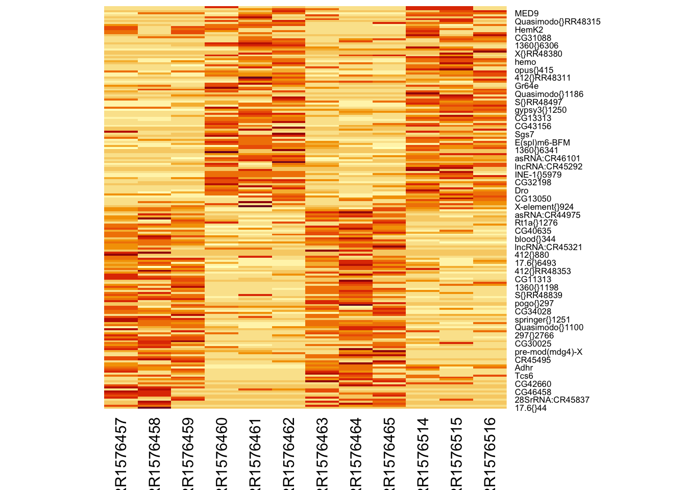

muestras <- read.table('../../data/dme_elev_samples.tsv', header = TRUE)
genex <- read.table('../../data/salmon.merged.gene_counts.tsv',
header = TRUE)Practica12
P12. Análisis de expresión diferencial
Preparación
Sólo necesitas instalar el paquete DESeq2 de Bioconductor. Si lo haces en el ordenador virtual y tienes problemas de compatibilidad entre la versión de R y la de Bioconductor, sigue la estrategia siguiente:
Crea una carpeta R en tu directorio de entrada al ordenador. Inicia una sesión de R y añade el directorio al .libPaths, así: .libPaths(‘./R’) (suponiendo que tu directorio de trabajo es el mismo donde has creado la carpeta R). Actualiza la versión de BiocManager a la 3.22 de la siguiente manera (atención, esto lleva un par de horas): BiocManager::install(version = ‘3.22’, lib = ‘./R’). Instala el paquete DESeq2: BiocManager::install(‘DESeq2’, lib = ‘./R’). Datos
Utilizaremos las medidas de expresión génica del archivo salmon.merged.gene_counts.tsv que podéis descargar en este enlace o en el aula virtual. Los datos proceden de 12 genotecas de RNA-seq de lecturas emparejadas, de muestras de Drosophila melanogaster de dos orígenes geográficos (Panamá y Maine) y dos tratamientos de temperatura (low y high) (Zhao 2015). Hay 3 réplicas biológicas para cada combinación de región y temperatura. Si tenéis curiosidad sobre cómo se han obtenido los recuentos de lecturas por gen a partir de los archivos FASTQ, podéis consultarlo en este enlace.
Además, necesitáis el archivo dme_elev_samples.tsv, una tabla que indica a qué región y tratamiento pertenece cada muestra. Lo podéis descargar de este enlace o del aula virtual.
Los dos archivos deben estar guardados en la carpeta de datos.
Exploración de los datos
#Ejercicio 1 Recuerda dejar constancia en un bloque de código de cómo obtienes las respuestas.
Usa la función paste() para añadir una columna a muestras que contenga la población y la temperatura unidas por _.
muestras$group <- paste(muestras$population, muestras$temp, sep = "_")
head(muestras) sample population temp group
1 SRR1576457 maine low maine_low
2 SRR1576458 maine low maine_low
3 SRR1576459 maine low maine_low
4 SRR1576460 maine high maine_high
5 SRR1576461 maine high maine_high
6 SRR1576462 maine high maine_high¿Cuál es el número total de lecturas por muestra?
colSums(genex[, -c(1,2)])SRR1576457 SRR1576458 SRR1576459 SRR1576460 SRR1576461 SRR1576462 SRR1576463
28252778 21565448 29471559 27692134 26953900 29368135 29706071
SRR1576464 SRR1576465 SRR1576514 SRR1576515 SRR1576516
26757043 26596118 30950499 25563787 24401671 ¿Los recuentos tienen distribuciones parecidas entre muestras?
boxplot(log10(genex[,3:14] + 1),
las = 2,
main = "Distribución de recuentos por muestra")
Sí, observamos distribuciones parecidas entre muestras.
pairs(genex[, -c(1,2)])
Con este comando podermos ver que casi todos los genes tienen una expresión muy baja, y los puntos se concentran en la esquina inferior izquierda.
¿Cuántos genes no se expresan en absoluto en ninguna de las muestras?
sum(rowSums(genex[,3:14]) == 0)[1] 4722Crear el objeto de clase DESeqDataSet
Para crear un objeto de clase DESeqDataSet necesitamos que las filas de la tabla muestras estén en el mismo orden que las columnas en genex. La función DESeqDataSetFromMatrix() necesita que los recuentos sean una matriz, no un marco de datos. Y en muestras debe haber factores.
suppressMessages(library('DESeq2'))Warning: package 'S4Vectors' was built under R version 4.5.3Warning: package 'Biobase' was built under R version 4.5.3all(names(genex)[3:14] == muestras$sample)[1] TRUE# Pasamos la columna "sample" a nombres de fila:
row.names(muestras) <- muestras$sample
# Eliminamos la columna "sample":
muestras$sample <- NULL
# Y convertimos "population" y "temp" en factores:
muestras$population <- factor(muestras$population,
levels = c('maine', 'panama'))
muestras$temp <- factor(muestras$temp,
levels = c('low', 'high'))
muestras population temp group
SRR1576457 maine low maine_low
SRR1576458 maine low maine_low
SRR1576459 maine low maine_low
SRR1576460 maine high maine_high
SRR1576461 maine high maine_high
SRR1576462 maine high maine_high
SRR1576463 panama low panama_low
SRR1576464 panama low panama_low
SRR1576465 panama low panama_low
SRR1576514 panama high panama_high
SRR1576515 panama high panama_high
SRR1576516 panama high panama_highAunque no hacía falta definir los niveles de los factores, lo indico porque es un buen momento para definir manualmente su orden (por defecto se ordenan alfabéticamente). El orden de los niveles determina qué nivel actúa como referencia en los contrastes estadísticos (el primero). Esto resultaría importante, por ejemplo, al comparar tratamientos respecto de un control.
Los datos de recuento deben ser números enteros y en forma de matriz
row.names(genex) <- genex$gene_name
genex$gene_name <- NULL
genex$gene_id <- NULL
genex <- round(as.matrix(genex))dds1 <- DESeqDataSetFromMatrix(
countData = genex,
colData = muestras,
design = ~ population + temp
)converting counts to integer modedds1class: DESeqDataSet
dim: 24254 12
metadata(1): version
assays(1): counts
rownames(24254): 7SLRNA:CR32864 a ... RR51477 Bari1{}RR51478
rowData names(0):
colnames(12): SRR1576457 SRR1576458 ... SRR1576515 SRR1576516
colData names(3): population temp group#Note Los objetos DESeqDataSet pueden contener información sobre las coordenadas cromosómicas de los genes o tránscritos, si se construyen a partir de otro tipo de datos.
Pre-filtrado
Una fracción importante de genes no se están expresando en ningúna muestra. Aunque el filtrado no es necesario, ayuda a reducir la memoria ocupada por dds1:
keep <- rowSums(counts(dds1)) > 0
dds1 <- dds1[keep, ]Expresión diferencial
Observa que la función DESeq() produce un objeto también de clase DESeqDataSet, pero con resultados añadidos:
dds1 <- DESeq(dds1)estimating size factorsestimating dispersionsgene-wise dispersion estimatesmean-dispersion relationshipfinal dispersion estimatesfitting model and testingres <- results(dds1)
reslog2 fold change (MLE): temp high vs low
Wald test p-value: temp high vs low
DataFrame with 19508 rows and 6 columns
baseMean log2FoldChange lfcSE stat pvalue
<numeric> <numeric> <numeric> <numeric> <numeric>
7SLRNA:CR32864 346.333 0.5918974 1.3301901 0.444972 0.656339979
a 555.596 -0.2730041 0.0718487 -3.799708 0.000144866
abd-A 531.996 -0.0286785 0.0789218 -0.363379 0.716321800
Abd-B 634.760 -0.1083918 0.0771241 -1.405420 0.159896347
Abl 1654.842 -0.1328055 0.0746580 -1.778851 0.075264235
... ... ... ... ... ...
RR51007 4.90906 3.8596869 2.972471 1.2984773 1.94123e-01
RR51048 16.60710 -0.8973071 0.341603 -2.6267530 8.62039e-03
RR51093 36.93279 0.0660523 1.685323 0.0391927 9.68737e-01
RR51475 159.62678 -2.6058194 1.875172 -1.3896429 1.64637e-01
RR51477 70.83394 1.6927986 0.192437 8.7966372 1.40977e-18
padj
<numeric>
7SLRNA:CR32864 0.81170166
a 0.00154574
abd-A 0.85146309
Abd-B 0.33849233
Abl 0.20046251
... ...
RR51007 3.82417e-01
RR51048 4.01746e-02
RR51093 9.84464e-01
RR51475 3.44815e-01
RR51477 2.06431e-16Por defecto, la función results() produce la tabla de resultados para el contraste entre el nivel último y el de referencia del último factor en la tabla que describe las muestras. En este caso, el factor es temp, el nivel de referencia es low y el otro nivel es high. Por tanto, los valores de log2FoldChange representan el logaritmo en base 2 de la relación entre niveles de expresión en muestras high respecto de muestras low.
#Ejercicio 3
Mira la ayuda de results() y genera también la tabla de resultados para el contraste entre las dos regiones de procedencia de las moscas.
res_pop <- results(dds1, contrast = c("population", "panama", "maine"))
res_poplog2 fold change (MLE): population panama vs maine
Wald test p-value: population panama vs maine
DataFrame with 19508 rows and 6 columns
baseMean log2FoldChange lfcSE stat pvalue
<numeric> <numeric> <numeric> <numeric> <numeric>
7SLRNA:CR32864 346.333 -0.2116106 1.3301901 -0.159083 0.8736035
a 555.596 -0.1114459 0.0718333 -1.551451 0.1207937
abd-A 531.996 0.0460822 0.0789226 0.583890 0.5592940
Abd-B 634.760 -0.0424386 0.0771227 -0.550274 0.5821316
Abl 1654.842 -0.1477705 0.0746581 -1.979298 0.0477825
... ... ... ... ... ...
RR51007 4.90906 2.118240 2.970241 0.713154 0.47575037
RR51048 16.60710 -1.274560 0.344507 -3.699658 0.00021589
RR51093 36.93279 -0.886468 1.685327 -0.525992 0.59889395
RR51475 159.62678 0.121496 1.875169 0.064792 0.94833965
RR51477 70.83394 -0.187567 0.188818 -0.993375 0.32052705
padj
<numeric>
7SLRNA:CR32864 0.966480
a 0.449953
abd-A 0.838008
Abd-B 0.850234
Abl 0.288737
... ...
RR51007 0.79163008
RR51048 0.00812376
RR51093 0.85672972
RR51475 0.98600818
RR51477 0.67811923Usa summary() sobre los resultados para ver el número de genes diferencialmente expresados entre cada par de condiciones.
summary(res)
out of 19508 with nonzero total read count
adjusted p-value < 0.1
LFC > 0 (up) : 2418, 12%
LFC < 0 (down) : 2336, 12%
outliers [1] : 90, 0.46%
low counts [2] : 3018, 15%
(mean count < 2)
[1] see 'cooksCutoff' argument of ?results
[2] see 'independentFiltering' argument of ?resultssummary(res_pop)
out of 19508 with nonzero total read count
adjusted p-value < 0.1
LFC > 0 (up) : 623, 3.2%
LFC < 0 (down) : 634, 3.2%
outliers [1] : 90, 0.46%
low counts [2] : 3018, 15%
(mean count < 2)
[1] see 'cooksCutoff' argument of ?results
[2] see 'independentFiltering' argument of ?results¿Cuál es la tasa de falsos positivos (FDR)?
Estamos controlando la tasa de falsos positivos a más del 10%, por lo que esperamos que más de 60 sean falsos positivos.
help(results)Gráficas
plotMA(res)
Los genes con niveles de expresión más bajos producen resultados más ruidosos (la varianza es mayor). La función lfcShrink() contrae (shrink) las estimaciones de los efectos (log fold change) para reducir el ruido y hacer el resultado más realista:
resShrink <- lfcShrink(dds1, coef = 'temp_high_vs_low',
type = 'normal')using 'normal' for LFC shrinkage, the Normal prior from Love et al (2014).
Note that type='apeglm' and type='ashr' have shown to have less bias than type='normal'.
See ?lfcShrink for more details on shrinkage type, and the DESeq2 vignette.
Reference: https://doi.org/10.1093/bioinformatics/bty895plotMA(resShrink)
#Ejercicio 4 ¿Sabrías hacer una gráfica volcán?
plot(res$log2FoldChange,
-log10(res$pvalue),
pch = 20,
main = "Volcano plot",
xlab = "log2 Fold Change",
ylab = "-log10(p-value)")
abline(h = -log10(0.05), col = "red")
Extraer datos transformados
Aunque los datos de entrada no deben estar normalizados y la función DESeq() ya tiene en cuenta las diferencias de tamaño de genoteca entre muestras y la relación entre media y varianza, puede ser útil disponer de los datos normalizados para representarlos gráficamente. Para ello podemos usar las funciones vst() y assay():
dds2 <- vst(dds1)
NormCounts <- assay(dds2)res <- res[! is.na(res$pvalue), ]
res <- res[order(res$log2FoldChange),]
heatmap(NormCounts[c(head(row.names(res), 100),
tail(row.names(res), 100)), ],
Rowv = NA, Colv = NA)
#Ejercicio 5
¿Podrías explicar qué hace el bloque de código anterior? Este bloque de bloque prepara y filtra los datos normalizados para generar una visualización gráfica (un mapa de calor o heatmap). Concretamente, hace lo siguiente: -vst() → normaliza datos (corrige varianza) -assay() → extrae matriz de expresión normalizada -Ordena genes por “log2FoldChange” -Selecciona: 100 más sobreexpresados 100 más reprimidos -Hace un heatmap
#Ejercicio 6 En este enlace analizan exactamente los mismos datos con otro paquete de R: limma. Una de sus conclusiones es se sobreexpresan más genes en temperatura baja que en temperatura alta. ¿Confirma tu análisis esta conclusión?
table(res$log2FoldChange > 0)
FALSE TRUE
9841 9577 Sí, el análisis confirma esta conclusión, se sobreexpresan más genes en temperatura baja (FALSE), que en alta (TRUE).
Estos son los 10 genes más diferencialmente expresados según aquel análisis entre las condiciones de baja y alta temperatura:
logFC AveExpr t P.Value adj.P.Val BCpr92F 2.473527 6.201774 24.28881 1.306910e-13 1.739105e-09 21.29258 Vajk3 1.675184 4.029281 21.90298 6.069753e-13 3.524528e-09 19.66813 lncRNA:CR46017 -3.974938 1.044005 -21.50807 7.945880e-13 3.524528e-09 16.80878 CG7214 2.198970 7.945664 20.75054 1.349821e-12 4.490516e-09 19.14847 CG3739 -2.869172 6.514652 -20.49734 4.414988e-12 1.175005e-08 18.01975 Acp1 2.231834 7.638125 17.79441 2.089853e-11 3.997808e-08 16.54909 ¿Cómo se comparan estos resultados con los tuyos?
res[rownames(res) %in% c("Cpr92F","Vajk3","lncRNA:CR46017",
"CG7214","CG3739","Acp1"), ]log2 fold change (MLE): temp high vs low
Wald test p-value: temp high vs low
DataFrame with 6 rows and 6 columns
baseMean log2FoldChange lfcSE stat pvalue
<numeric> <numeric> <numeric> <numeric> <numeric>
Cpr92F 2718.979 -2.39126 0.1172255 -20.3988 1.71335e-92
Acp1 7042.192 -2.17394 0.1217046 -17.8625 2.31245e-71
CG7214 8615.934 -2.14594 0.1178993 -18.2015 5.02311e-74
Vajk3 513.411 -1.65423 0.0886464 -18.6610 1.02705e-77
CG3739 3912.044 2.93354 0.1497440 19.5903 1.86913e-85
lncRNA:CR46017 116.973 3.97987 0.2018281 19.7191 1.47756e-86
padj
<numeric>
Cpr92F 1.40494e-88
Acp1 4.21379e-68
CG7214 1.17684e-70
Vajk3 3.36871e-74
CG3739 7.66345e-82
lncRNA:CR46017 8.07732e-83Los log2FoldChange negativos y los valores de padj muy bajos indican una mayor expresión en condiciones de baja temperatura, confirmando los resultados del análisis previo.